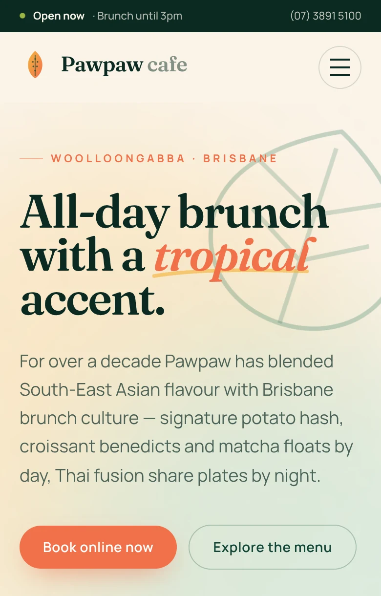

Unit 01 / Hospitality — Brisbane, AU

Pawpaw Cafe
I built the dietary filters, opening-hours display, and booking links for Pawpaw’s café site.
React · Front-end development
01Selected work
02 units
I built the dietary filters, opening-hours display, and booking links for Pawpaw’s café site.
React · Front-end development

I built a home-search interface for buyers and a separate valuation form for sellers.
HTML · CSS · JavaScript
02Profile
Operator / R.E.
Good interfaces start with understanding how things work.
I’m Rozel, a web developer and IT professional based in Balo-i, Lanao del Norte. My background in database systems shapes how I approach the front end: clear structure first, then the details that make it feel human.
Service record
Tetelestai Web Development Services · Philippines
Developing and maintaining responsive WordPress websites, integrating forms and plugins, and translating client requirements into dependable page builds.
SODA Trade Corporation · Palao, Iligan City
Reconciled accounts and inventory, maintained ledgers, and built weekly Excel reports with lookups, pivot tables, and validation checks.
Local Government Unit of Balo-i
Handled records, correspondence, database entry, and inter-department coordination with a focus on accuracy and audit readiness.
Mindanao State University at Naawan
Major in Database Systems. A foundation in organizing information, validating data, and understanding the systems behind an interface.
03Prototype lab
Ongoing experimentA little geometry, drawn with code. Turn a form, pick an ink, and take a print with you.
Print controls